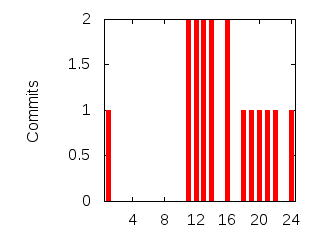

Activity
| Hour | 0 | 1 | 2 | 3 | 4 | 5 | 6 | 7 | 8 | 9 | 10 | 11 | 12 | 13 | 14 | 15 | 16 | 17 | 18 | 19 | 20 | 21 | 22 | 23 |
|---|
| Commits | 1 | 0 | 0 | 0 | 0 | 0 | 0 | 0 | 0 | 0 | 2 | 2 | 2 | 2 | 0 | 2 | 0 | 1 | 1 | 1 | 1 | 1 | 0 | 1 |
|---|
| % | 5.88 | 0.00 | 0.00 | 0.00 | 0.00 | 0.00 | 0.00 | 0.00 | 0.00 | 0.00 | 11.76 | 11.76 | 11.76 | 11.76 | 0.00 | 11.76 | 0.00 | 5.88 | 5.88 | 5.88 | 5.88 | 5.88 | 0.00 | 5.88 |
|---|

| Day | Total (%) |
|---|
| 1 | 4 (23.53%) |
|---|
| 2 | 9 (52.94%) |
|---|
| 3 | 3 (17.65%) |
|---|
| 4 | 0 |
|---|
| 5 | 0 |
|---|
| 6 | 1 (5.88%) |
|---|
| 7 | 0 |
|---|
| Weekday | 0 | 1 | 2 | 3 | 4 | 5 | 6 | 7 | 8 | 9 | 10 | 11 | 12 | 13 | 14 | 15 | 16 | 17 | 18 | 19 | 20 | 21 | 22 | 23 |
|---|
| 1 | | | | | | | | | | | | | | 2 | | 2 | | | | | | | | |
|---|
| 2 | | | | | | | | | | | 2 | 2 | 1 | | | | | | 1 | | 1 | 1 | | 1 |
|---|
| 3 | 1 | | | | | | | | | | | | 1 | | | | | 1 | | | | | | |
|---|
| 4 | | | | | | | | | | | | | | | | | | | | | | | | |
|---|
| 5 | | | | | | | | | | | | | | | | | | | | | | | | |
|---|
| 6 | | | | | | | | | | | | | | | | | | | | 1 | | | | |
|---|
| 7 | | | | | | | | | | | | | | | | | | | | | | | | |
|---|
| Month | Commits (%) |
|---|
| 1 | 0 (0.00 %) |
| 2 | 0 (0.00 %) |
| 3 | 0 (0.00 %) |
| 4 | 5 (29.41 %) |
| 5 | 1 (5.88 %) |
| 6 | 2 (11.76 %) |
| 7 | 9 (52.94 %) |
| 8 | 0 (0.00 %) |
| 9 | 0 (0.00 %) |
| 10 | 0 (0.00 %) |
| 11 | 0 (0.00 %) |
| 12 | 0 (0.00 %) |
| Month | Commits |
|---|
| 2010-07 | 9 |
| 2010-06 | 2 |
| 2010-05 | 1 |
| 2010-04 | 5 |
| Year | Commits (% of all) |
|---|
| 2010 | 17 (100.00%) |